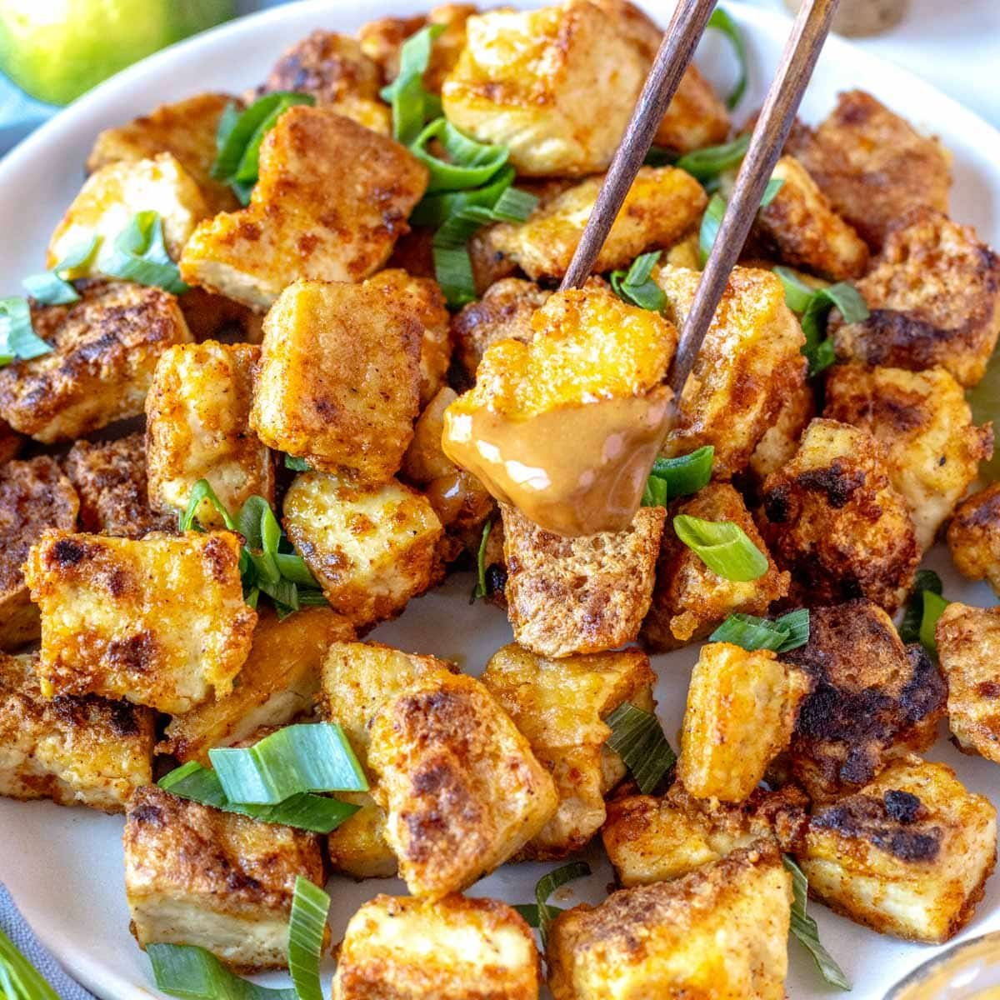
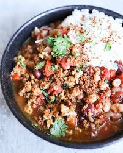
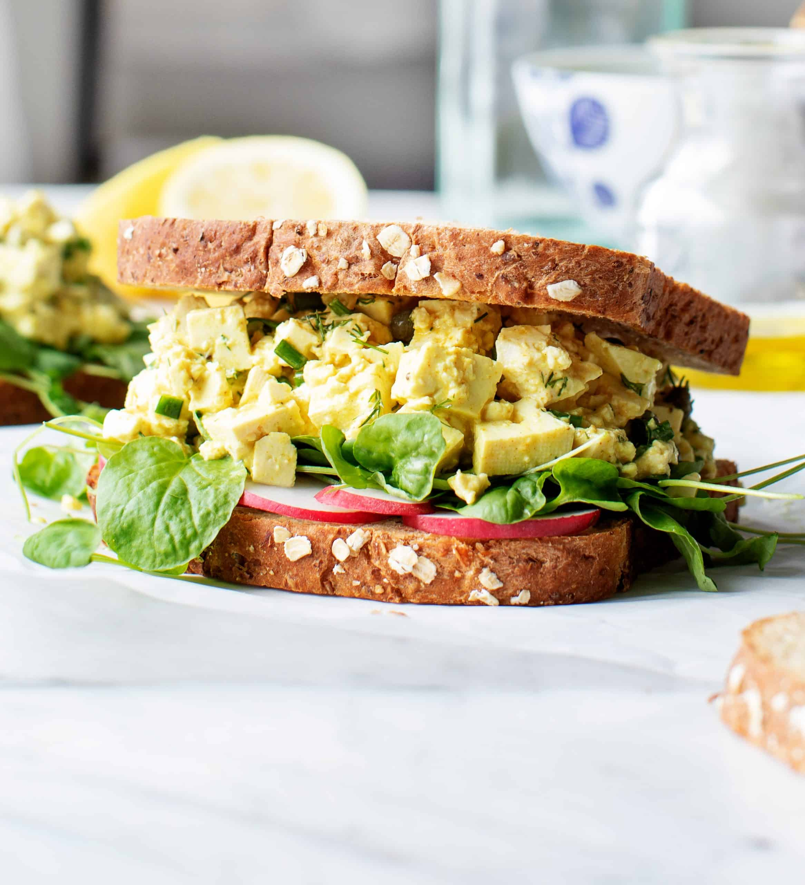

Fried Tofu
Very creative use of nutritional yeast! I cut mine up pretty small, and with the higher breading to tofu ratio they were pretty good chicken nugget analogues. You could freeze the tofu first and add corn starch or bread crumbs to the coating to make them even more like nuggets.
Healthy Vegetarian Tofu Chili
I made this exactly as stated except I used a red bell pepper (more antioxidants). The flavor and texture were perfect! Be sure to lightly brown the tofu as directed.
Tofu "Egg" Salad
I am not a fan of tofu but I made this for a friend; I liked it and she loved it! Excellent recipe: healthy and a nice change.